РАДИАТОР > УСТАНОВКА |
| 1. УСТАНОВИТЕ УПЛОТНЕНИЕ МЕЖДУ КРОНШТЕЙНОМ И РАДИАТОРОМ № 1 |
| 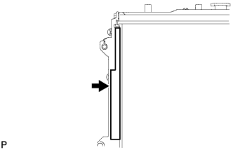 |
Установите уплотнение на радиатор в сборе, как показано на рисунке.
| 2. УСТАНОВИТЕ УПЛОТНЕНИЕ МЕЖДУ КРОНШТЕЙНОМ И РАДИАТОРОМ № 2 |
| 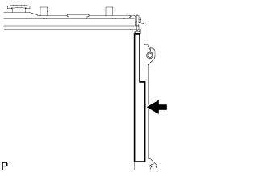 |
Установите уплотнение на радиатор в сборе, как показано на рисунке.
| 3. УСТАНОВИТЕ РАДИАТОР В СБОРЕ |
| 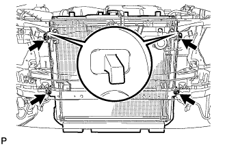 |
Вставьте крюки кронштейна радиатора в отверстия кронштейна радиатора.
Закрепите радиатор 4 болтами.
| 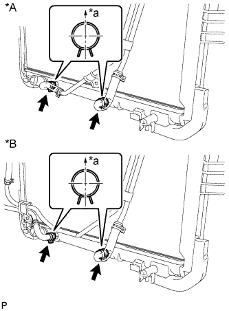 |
Для моделей с автоматической трансмиссией:
Подсоедините 2 патрубка масляного радиатора.
| *A | Для моделей с подогревателем |
| *B | Для моделей с масляным радиатором трансмиссии с воздушным охлаждением |
| *a | Верх |
| 4. УСТАНОВИТЕ КОЖУХ ВЕНТИЛЯТОРА |
Установите шкив вентилятора на насос системы охлаждения.
Поместите кожух вместе с вентилятором вискомуфты между радиатором и двигателем.
| 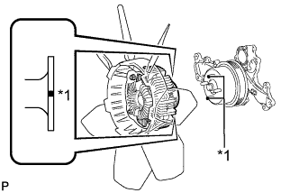 |
Совместите нанесенные краской метки на головках шпилек насоса системы охлаждения с нанесенными краской метками такого же цвета на наружной кромке фланца вискомуфты и установите вискомуфту на насос системы охлаждения.
| *1 | Метка, нанесенная краской |
Установите вентилятор вискомуфты на насос системы охлаждения и предварительно закрепите его 4 гайками. Затяните гайки вручную до упора.
| 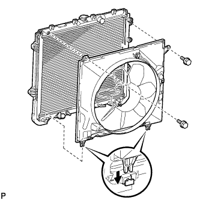 |
Присоедините захваты кожуха к радиатору, как показано на рисунке.
Закрепите кожух 2 болтами.
Установите поликлиновой ремень вентилятора и генератора (Нажмите здесь).
Затяните 4 гайки вентилятора вискомуфты.
| 5. ПОДСОЕДИНИТЕ ТРУБКУ МАСЛЯНОГО РАДИАТОРА (для моделей с масляным радиатором трансмиссии с воздушным охлаждением) |
| 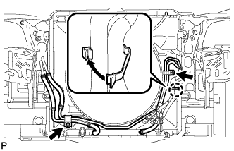 |
Подсоедините патрубок масляного радиатора с помощью 2 болтов и введите в зацепление захват, чтобы закрыть зажим гибкого шланга.
| 6. ПОДСОЕДИНИТЕ ТРУБКУ МАСЛЯНОГО РАДИАТОРА (для моделей с подогревателем) |
| 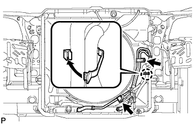 |
Подсоедините патрубок масляного радиатора с помощью 2 болтов и введите в зацепление захват, чтобы закрыть зажим гибкого шланга.
| 7. УСТАНОВИТЕ РАСШИРИТЕЛЬНЫЙ БАЧОК РАДИАТОРА |
Установите расширительный бачок радиатора и закрепите его 3 болтами.
Подсоедините шланг расширительного бачка к верхней стороне верхнего бачка радиатора.
| 8. УСТАНОВИТЕ ПАТРУБОК РАДИАТОРА № 2 |
| 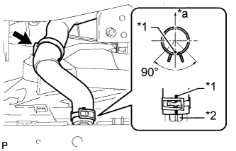 |
Подсоедините шланг радиатора № 2 таким образом, чтобы нанесенная на него краской метка оказалась совмещенной с выступом на радиаторе, как показано на рисунке.
| *1 | Метка, нанесенная краской |
| *2 | Выступ |
| *a | Верх |
| 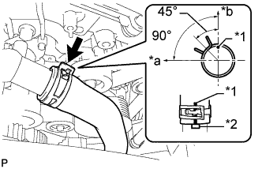 |
Подсоедините шланг радиатора № 2 таким образом, чтобы нанесенная на него краской метка оказалась совмещенной с выступом на приемнике охлаждающей жидкости, как показано на рисунке.
| *1 | Метка, нанесенная краской |
| *2 | Выступ |
| *a | Передняя сторона |
| *b | Верх |
| 9. УСТАНОВИТЕ ПАТРУБОК РАДИАТОРА № 1 |
| 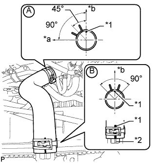 |
Подсоедините шланг радиатора № 1 к кожуху приемника охлаждающей жидкости, как показано на рисунке A.
| *1 | Метка, нанесенная краской |
| *2 | Выступ |
| *a | Передняя сторона |
| *b | Верх |
Подсоедините шланг радиатора № 1 таким образом, чтобы нанесенная на него краской метка оказалась совмещенной с выступом на радиаторе, как показано на рисунке B.
| 10. УСТАНОВИТЕ ЛЕВЫЙ БОКОВОЙ ОТРАЖАТЕЛЬ РАДИАТОРА |
Введите в зацепление 3 захвата.
Установите отражатель и закрепите его фиксатором.
| 11. УСТАНОВИТЕ ПРАВЫЙ БОКОВОЙ ОТРАЖАТЕЛЬ РАДИАТОРА |
Введите в зацепление 3 захвата.
Установите отражатель и закрепите его фиксатором.
| 12. УСТАНОВИТЕ ВЕРХНИЙ ДЕРЖАТЕЛЬ ПЕРЕДНЕГО БАМПЕРА |
Установите держатель и закрепите его 3 болтами.
| 13. УСТАНОВИТЕ НАКЛАДКУ ПЕРЕДНЕГО БАМПЕРА |
Установите облицовку переднего бампера (Нажмите здесь).
| 14. ДОБАВЬТЕ ОХЛАЖДАЮЩУЮ ЖИДКОСТЬ ДВИГАТЕЛЯ |
Затяните 2 пробки сливных кранов блока цилиндров.
Затяните пробку сливного крана радиатора вручную.
Долейте охлаждающую жидкость.
| Параметр / Устройство | Заданные условия | |
| Для моделей с автоматической трансмиссией | Для моделей без заднего подогревателя | 10,5 литра (11,1 кварты США, 9,2 английской кварты) |
| Для моделей с задним подогревателем | 12,3 литра (13,0 кварты США, 10,8 английской кварты) | |
| Для моделей с подогревателем | 12,8 литра (13,5 кварты США, 11,2 английской кварты) | |
| для моделей с механической трансмиссией | Для моделей без заднего подогревателя | 10,7 литра (11,3 кварты США, 9,4 английской кварты) |
| Для моделей с задним подогревателем | 12,5 литра (13,2 кварты США, 11,0 английской кварты) | |
Медленно налейте охлаждающую жидкость в расширительный бачок радиатора до отметки "F".
Установите пробку расширительного бачка.
Установите на место пробку радиатора.*1
Запустите двигатель и сразу же остановите его.*2
Подождите примерно 10 с. Затем снимите пробку радиатора и проверьте уровень охлаждающей жидкости. Если уровень охлаждающей жидкости снизился, добавьте охлаждающую жидкость.*3
Повторяйте шаги *1, *2 и *3 до тех пор, пока уровень охлаждающей жидкости не снизится.
Установите на место пробку радиатора.*4
Настройте систему кондиционирования, как описано ниже.*5
| Параметр / Устройство | Условие |
| Скорость вентилятора | Любая настройка, кроме OFF (ВЫКЛ) |
| Температура | В сторону "WARM" |
| Переключатель системы кондиционирования | Выкл |
Запустите двигатель, прогрейте его настолько, чтобы открылся термостат, а затем дайте поработать в таком состоянии несколько минут, чтобы прокачать охлаждающую жидкость.*6
Остановите двигатель и подождите, пока охлаждающая жидкость не охладиться до температуры окружающего воздуха. Затем снимите пробку радиатора и проверьте уровень охлаждающей жидкости.*7
Если уровень охлаждающей жидкости снизился, добавьте охлаждающую жидкость и прогрейте двигатель до открывания термостата.*8
Если уровень охлаждающей жидкости не снизился, убедитесь, что уровень жидкости в расширительном бачке радиаторе находится на линии F.
Если уровень охлаждающей жидкости ниже линии F, повторите шаги с *4 по *8.
Если уровень охлаждающей жидкости выше линии F, слейте охлаждающую жидкость до линии F.
| 15. ПРОВЕРЬТЕ, НЕТ ЛИ УТЕЧЕК ОХЛАЖДАЮЩЕЙ ЖИДКОСТИ |
Заполните радиатор охлаждающей жидкостью, а затем подсоедините приспособление для опрессовки системы охлаждения и проверки пробки радиатора.
Прогрейте двигатель.
С помощью приспособления для опрессовки системы охлаждения и проверки пробки радиатора увеличьте давление в радиаторе до 123 кПа (1,3 кгс/см2, 18 фунтов на кв. дюйм) и убедитесь, что давление не падает.
Если давление снижается, проверьте на наличие утечек шланги, радиатор и насос системы охлаждения. Если нет следов или признаков утечки внешней охлаждающей жидкости, проверьте сердцевину отопителя, блок цилиндров и головку блока цилиндров.
| 16. УСТАНОВИТЕ ЗАЩИТУ КАРТЕРА ДВИГАТЕЛЯ № 1 В СБОРЕ |
| 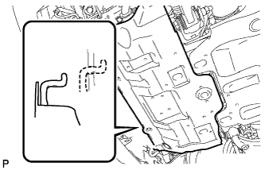 |
Присоедините защиту картера двигателя к кузову автомобиля, как показано на рисунке.
Вверните 4 болта.
| 17. УСТАНОВИТЕ НИЖНЮЮ НАКЛАДКУ ПЕРЕДНЕГО БАМПЕРА |
Установите нижнюю облицовку переднего бампера и закрепите ее 5 болтами и фиксатором.
| 18. УСТАНОВИТЕ ДЕКОРАТИВНУЮ КРЫШКУ V-ОБРАЗНОГО ДВИГАТЕЛЯ |
| 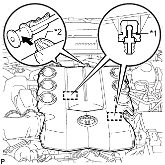 |
Совместите 2 крюка крышки V-образного двигателя с кронштейном. Затем совместите 2 уплотнительных шайбы декоративной крышки V-образного двигателя с 2 штифтами и нажмите на декоративную крышку V-образного двигателя, чтобы закрепить штифты.
| *1 | Штифт |
| *2 | Крюк |
| 19. УСТАНОВИТЕ ВЕРХНЕЕ УПЛОТНЕНИЕ КРОНШТЕЙНА РАДИАТОРА |
Установите верхнее уплотнение кронштейна радиатора и закрепите его 13 фиксаторами.